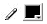
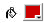
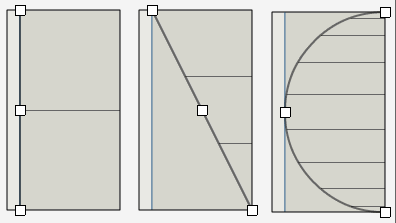
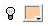

3D primitives is a Fireworks panel for Fireworks MX which allows you to create within your Fireworks document simple 3D objects or "primitives" as single shapes or short animations. 3D primitives, is a panel, much like other panels in Fireworks, and is available through Fireworks' Window menu. It exists on the screen like any other panel and can be arranged in your panel layout as you please. For best performance , however, it would not be a good idea to make 3D Primitives part of your default layout and, instead, only opening it on demand - when you have a need for it. When using 3D Primitives, you are given an interface which allows you to create modify and animate a simple 3D object. Afterwards, you are then given the option to "export" that object into you current Fireworks MX document. Have you ever needed simple 3D in your Fireworks creations? Ever have the need or desire for simple 3D animations? Maybe want some simple wire frame shapes for design? ... or even just for reference? That's what 3D Primitives provides. It's by no means an all-purpose 3D authoring environment, but does offer simple 3D shapes which can altered and rotated and finally added into a Fireworks document. As it exists as a Fireworks panel, 3D Primitives is not very powerful in terms of creating 3D objects. Rendering is not hardware accelerated and slow on the whole. On top of this, exporting 3D objects from 3D Primitives can be processor intensive, especially for objects of great or maximum complexity. Fireworks may seem to lock up in the export process when exporting complex objects, though, given enough time, it will eventually come through finally exporting the shape. Animations are limited to a total of 25 frames, no more. If you desire more, you can export more than once to create more frames as needed. When animating, only view rotation and light rotation are able to be animated. Everything else is set once and remains so for every frame within the timeline. Each frame exported makes for one addition to the history panel. If you have a full animation of 25 frames and have 25 or less undo steps, exporting your animation will completely take over all history steps and may not even let you completely undo the animation should you need or desire to.
The interface of 3D Primitives is primarily divided into 4 portions, the Title (or title bar), the 3D viewport, the Timeline and the side panels.
The title along the top of the panel shows the name of your primitive on the left and has a button (i) for accessing this document on the right. The name defaults to Untitled Document. Double-clicking the title name will allow you to edit it. Layers created when the object is exported into a Fireworks document will be named based off of the title name. The 3D viewport is the visual three dimensional representation of the object as it appears in the currently selected frame in the timeline. It not only shows a basic preview of the object, but also provides you means for interacting with the object letting you changing its view or, when visible, the light's rotation around that view. Clicking and dragging anywhere within the large inner circle area defined behind 3D object will let you rotate the view of that object in x any y. This movement just like rotating the scene in perspective view in many higher-end 3D applications like Maya. The thin outer dark gray circle allows you to rotate in z, which, in the current order of rotation handles much like a 2D rotation. When the light is visible, it can be rotated in x and y by clicking on its light source circle and can be rotated in z using a second outer circle that appears when the light is visible (its color matches the light's). The timeline in the 3D Primitives panel lives below the 3D viewport and provides a way to animate or make consecutive variations of a single object at one export. It provides 25 frames total (each white rectangle represents a frame). A frame highlighted red represents the current frame. You can click and drag the highlighted frame to change frames or just click on any one frame to make it current. Key frames are represented by black circles in a frame. Key frames are 'saved' changes in the rotation of the view and light. A key frame is set whenever the light or view is rotated for that frame and is automatically set for each the view and the light. There is no way to key frame either one or the other. If you wish your light not to change within your animation, be sure to position it before you begin key framing the view. The following keys will allow you to delete a key frame on the selected frame:
Note: the first key frame cannot be deleted. Above the frames of the timeline are 2 handles allowing you to make a selection of the timeline. This selection will determine which frames of the timeline are exported if a range of frames (an animation) is being exported. Panels are 3D Primitives own internal panels for controlling settings for the 3D object being created. There are 6 panels total, all of which are accessible from the pull-down located at the top of each panel save for the Profile panel which is only accessible from the shape panel. The shape panel provides the main interface for 'constructing' your 3D primitive, defining the main characteristics of how it looks. Your options are: Line Color: allows you to specify the color of the polygonal outlines of the object. It can be set to none giving no lines. Fill Color: allows you to specify the color of the polygons that make up the object. If Line Thickness: how thick polygon outlines are Radial Segments: How many times the primitive object is divided along its radius as though looking straight down on the object (like longitude lines on a globe). Axial Segments: How many times the primitive object is divided going down along its side (like latitude lines on a globe). Profile: defines the shape of the radial lines. The profile button opens the Profile panel. The profile gives a means for altering the 'profile' of the primitive object. The profile represents the shape taken by the radial lines that go down the shape and is controlled through 3 points. In shaping these points, you can shape the shape of your shape. As a reference, your axial segment lines are previewed in this panel. The following profiles represent 1) a rectangle 2) a cone and 3) a sphere  The view panel provides controls for the view of your object. These are the x, y and z rotations around the object which are also (and probably more accurately) editable by rotating in the 3D viewport. In addition to the rotation of the view, a perspective slider is also included allowing you to adjust the perspective of the view. The lower the perspective, the more distorted the view. The transform panel is kind of an extension of the shape panel as it allows you to control the shape of your 3D object. The transform panel, however, only controls scaling of the shape, scaling the shape relative to any of its base x, y or z axes. The light panel provides control for the light. Light Color: the color of the light. On: determines whether or not the light is on. If on, its color will affect the color of the 3D object. If not, the light will not affect the color of the object. Show: determines whether or not the light is seen in the 3D viewport. Note: though visible in the viewport, the light will not be included in export. Spread: determines how concentrated the light is on any one spot of the 3D object. With a low spread, the light is concentrated on a very small part of the object. Higher spreads light up more of the object and is less concentrated. x,y and z rotations are included control how the light is rotated. The export panel has settings controlling the export of the 3D object from the 3D Primitives panel into your Fireworks document. Export Frames: determines whether or not a single frame is exported or a range of frames are exported. Ranges of frames are dictated by the selection in the timeline. When a range is selected, you are also given the option to export the animation as frames or layers. Flatten: determines whether or not the exported object is in individual vector shapes (one for each polygonal face) or as one single flattened bitmap. Scale: allows you to alter the size of the final export. By default the export scale is 1:1 as seen on the screen in the panel (the same size) unless scaled otherwise using this option. The preview button allows a simple internal preview of an animation (or still) being exported. Clicking 'Done' from the preview screen will return you to the main interface. The export button exports your final object/animation to Fireworks based on your export settings. A new screen will appear with a progress bar showing the progress of the export. When finished, you are given the option to return to the main interface.
Exporting from 3D Primitives can be a processor intensive process, especially for older machines and for complex 3D objects in long animations. Be patient, even if Fireworks seems to lock up. The export process will eventually complete. It's good not too push the limits of shape definition though. If you can keep it simple do so. If something is selected in Fireworks on export, the export will be centered on that selection and not its default position which is in the upper left of the document. This gives you better control in positioning 3D objects, especially for animations which would be harder to move after export. Exporting creates a new layer in your Fireworks document with the name given to the 3D object in the panel title. This layer is created above the current layer and if exporting as multiple layers, each consecutive layer is added above the next. When exporting as frames, the current frame will serve as frame 1 for the animation and new frames will be added (if not present) for those needed in the animation. For exports with no line color, you may want to consider using edge set to hard in Fireworks. Using soft edge settings can allow small faded gaps in polygons as they are seen on the screen. Many of your current brush and fill settings are retained on export other than those specified in the 3D Primitives panel.
1.0.0 - Added documentation. 0.8.9 - Bug Fixed. Resolved issues concerning brush settings in wire frame export (export with no fill). 0.8.0 - Bug Fixed. Progress
bar on export went beyond bounds.
Created by senocular © 2003
|